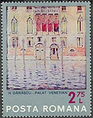
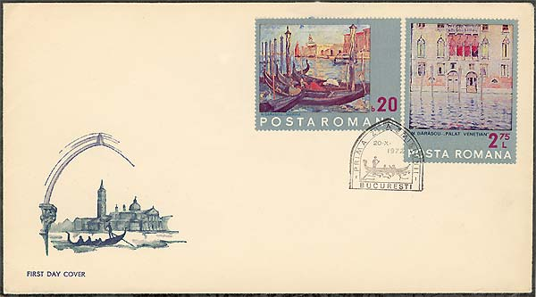

Venice in the Romanian Painting
Nicolae Darascu
Nicolae Darascu was born in Giurgiu, on 18 Feb 1883; he died in Bucharest, on 14 Aug 1959. From 1902 to 1906 he studied painting at the Academy of Fine Arts in Bucharest. His admiration for the work of Nicolae Grigorescu and Stefan Luchian led him to take up a bursary in 1906 to study at the Académie Julian in Paris under Jean-Paul Laurens and in 1907 at the Ecole des Beaux-Arts under Luc Olivier Merson. Darascu’s fascination with Cézanne encouraged him to travel in 1908 in the south of France. Until 1911, when he returned to Romania, he often painted at St Tropez, Ramatuelle and Grimaud. Although attracted by pointillism, his landscapes, even those painted using this technique, maintained something of Cézanne’s solidity. In 1910 he exhibited a self-portrait (destr.) at the Societé des Artistes Français in Paris.
 |
| Sculpture by Constantin Brâncusi |
Shortly after returning to Romania in 1911 he had a one-man show in December of the works painted in France, and France was to exert a continuing fascination for him until World War II. He was equally drawn to Venice, visiting it on many occasions to gain inspiration from the old walls, the effects of light on the water, and the chromatic explosions of the colourful sails of the boats, all of which he depicted with an exuberant affection (e.g. Boats in Venice, 1926–7; Bucharest, N. Mus. A.).
 |
 |
Unlike many of his contemporaries, Darascu rarely painted interiors or still-lifes. Instead he traveled widely, searching for places that would remind him of the landscape of his youth, for example in the region of the Danube delta or on the shore of the Black Sea. He painted these in an impressionistic way, in order to catch the finest nuances of atmosphere (e.g. Inn on the Edge of the Sea, 1935–9; Bucharest, N. Mus. A.).

During World War II his house and studio were destroyed, and he turned his concentration to an area of hills that inspired him to paint wide horizons, highly coloured but without the exuberance of his earlier work (e.g. Bridge over the Argesh, 1948–53; Topalu, Dinu & Sevasta Mus. A.). From 1936 to 1950 he was a professor at the Fine Arts Academy in Bucharest.
The nice set presented above was issued by the Romanian post on October 20, 1972, under the name "Save Venice". For more information about the components of this set please point to the individual images with the mouse index.
| Published:
05/18/2002. Revised: 05/19/02. Copyright © 2002 by Victor Manta, Switzerland. All rights reserved worldwide. |